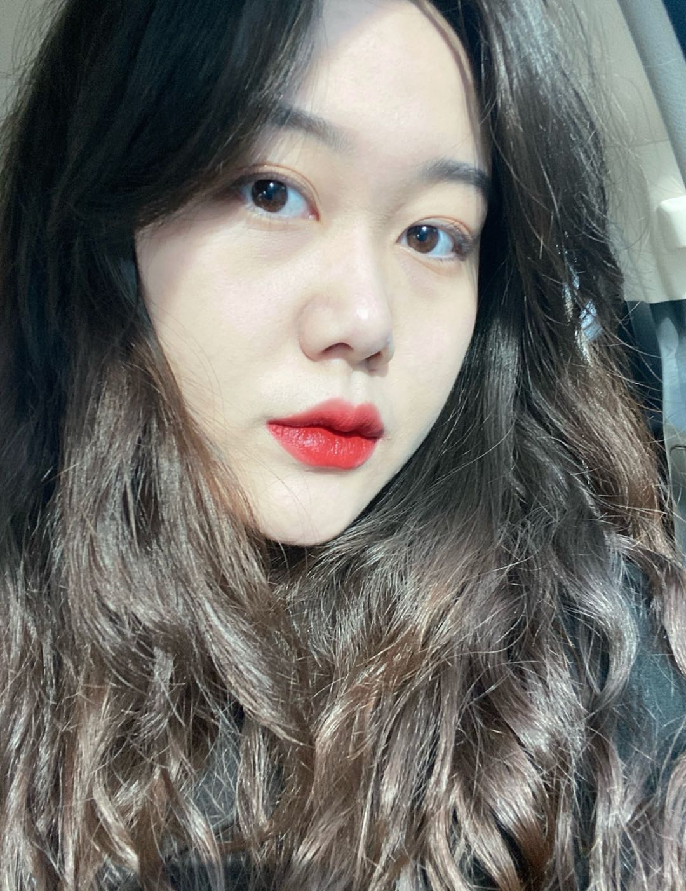

- My high school studied in Qingdao No. 9 High School.
- I'm currently studying at Michigan State University, majoring in Advertising Creative Design, and minoring in Graphic Design;
- I have had three internship experiences in Qingdao Zhonghe Baidu Advertising Co., Ltd; Hisense and Phoenix China.